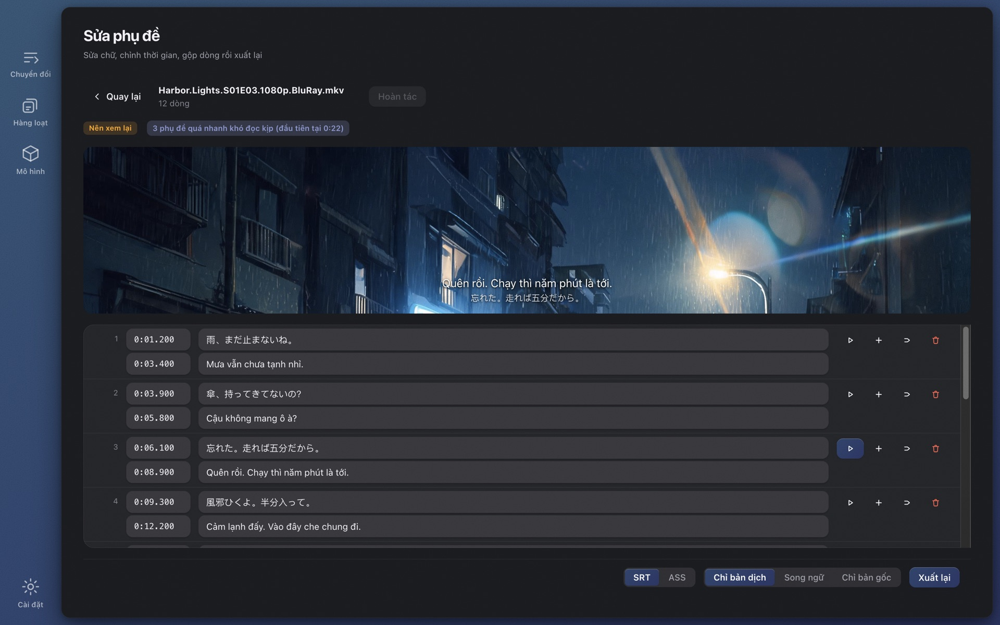
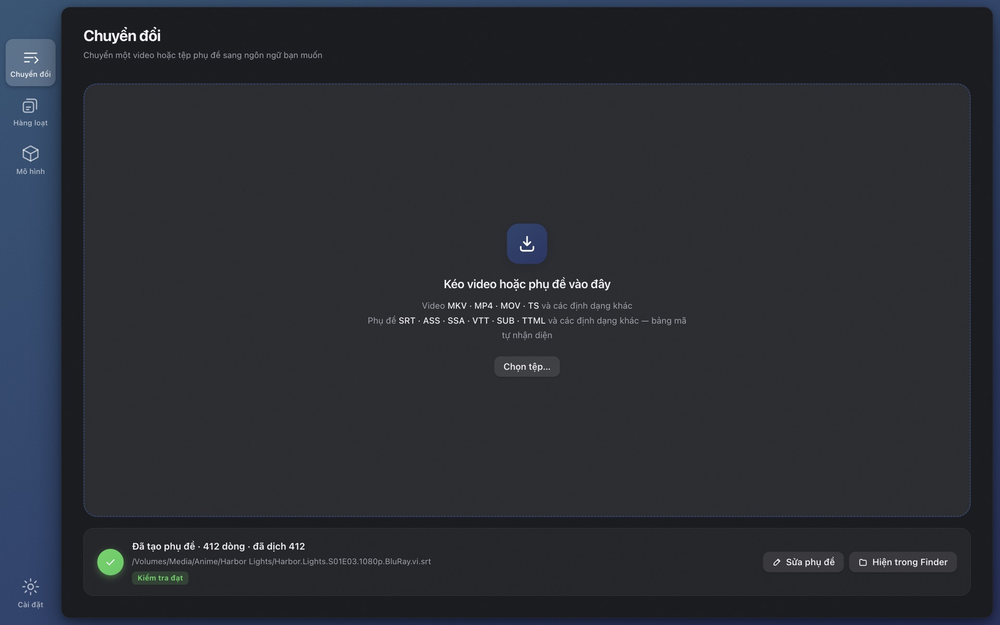
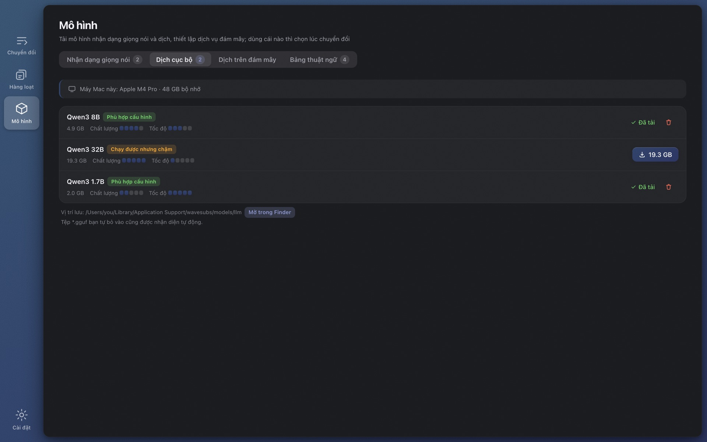
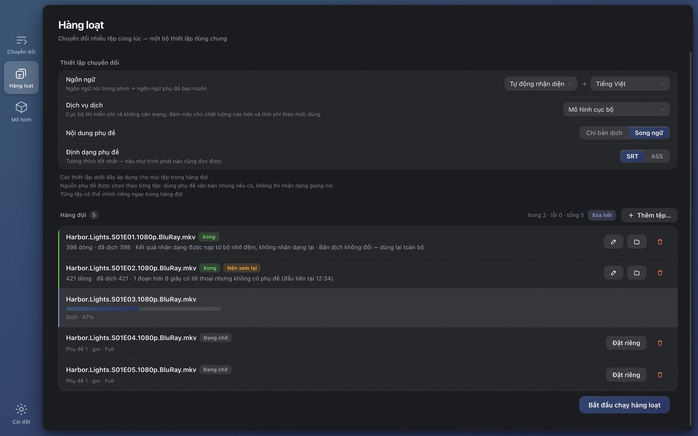

Để AI cục bộ tạo trực tiếp từ video
Wave Subs nhận dạng lời thoại trong video, tạo phụ đề SRT / ASS và dịch sang ngôn ngữ của bạn. Tất cả ngay trên máy của bạn — không cần internet, hoàn toàn miễn phí.

Trình chỉnh sửa: sửa chữ, chỉnh thời gian, bấm vào dòng nào cũng nghe được
Không cần tìm trang phụ đề, không tải video lên, không tạo tài khoản.
MKV, MP4, MOV, TS đều được. Rãnh phụ đề có sẵn trong video được phát hiện và dùng ngay.
whisper.cpp nhận dạng lời thoại trên máy bạn, tự phát hiện ngôn ngữ; thời gian khớp với đúng lúc lời thoại được nói (tinh chỉnh theo phụ đề chính thức của sáu bộ phim dài).
Dịch sang ngôn ngữ của bạn, xuất SRT hoặc ASS đặt cạnh video — trình phát nào cũng đọc được. Đánh giá chất lượng cho biết chỗ cần xem.

Dịch sang ngôn ngữ của bạn, xuất SRT hoặc ASS đặt cạnh video — trình phát nào cũng đọc được. Đánh giá chất lượng cho biết chỗ cần xem.

29 ngôn ngữ đích: Việt, Anh, Trung (giản thể/phồn thể), Nhật, Hàn, Pháp, Đức, Tây Ban Nha, Bồ Đào Nha, Nga, Thái, Indonesia, Mã Lai… Mặc định dùng mô hình Qwen3 cục bộ — miễn phí và ngoại tuyến — hoặc bất kỳ API tương thích OpenAI nào.
Sửa chữ, chỉnh thời gian, chèn, xóa, gộp, hoàn tác, tự lưu. Bấm vào dòng nào cũng nghe đúng câu đó — kể cả HEVC hay DTS trình duyệt không phát được, nhờ ffmpeg đi kèm. Phát hiện chất lượng bấm được.

Kéo cả thư mục vào; mọi tệp dùng chung thiết lập, tệp riêng có thể chọn rãnh phụ đề, rãnh âm thanh hoặc công cụ khác. Mỗi dòng xong đều có đánh giá chất lượng.
Công cụ phụ đề trực tuyến bắt bạn tải cả phim lên. Wave Subs không gửi gì đi.
Mô hình tải một chạm trong ứng dụng; ứng dụng đánh dấu từng mô hình "phù hợp / dùng được / quá nặng" theo RAM máy bạn. Cùng quy tắc đó, dạng bảng:
| Mô hình | Dung lượng tải | RAM khi chạy | Chất lượng | Tốc độ | Mac: RAM đề xuất | PC Windows: RAM đề xuất |
|---|---|---|---|---|---|---|
| Tiny | 75 MB | 0.5 GB | ●○○○○ | ●●●●● | 8 GB | 16 GB |
| Base | 142 MB | 0.7 GB | ●●○○○ | ●●●●● | 8 GB | 16 GB |
| Small | 466 MB | 1.2 GB | ●●●○○ | ●●●●○ | 8 GB | 16 GB |
| Medium | 1.5 GB | 2.6 GB | ●●●●○ | ●●○○○ | 16 GB | 24 GB |
| Large v3 Turbo | 1.6 GB | 2.2 GB | ●●●●◐ | ●●●●○ | 16 GB | 24 GB |
| Large v3 | 3.0 GB | 4.5 GB | ●●●●● | ●○○○○ | 16 GB | 24 GB |
| Mô hình | Dung lượng tải | RAM khi chạy | Chất lượng | Tốc độ | Mac: RAM đề xuất | PC Windows: RAM đề xuất |
|---|---|---|---|---|---|---|
| Qwen3 1.7B | 1.8 GB | 2.5 GB | ●●○○○ | ●●●●● | 16 GB | 24 GB |
| Qwen3 4B | 2.4 GB | 3.5 GB | ●●●○○ | ●●●●○ | 16 GB | 24 GB |
| Qwen3 8B | 4.9 GB | 6 GB | ●●●●○ | ●●●○○ | 16 GB | 24 GB |
| Qwen3 14B | 9.0 GB | 10.5 GB | ●●●●◐ | ●●○○○ | 24 GB | 32 GB |
| Qwen3 32B | 19.7 GB | 22 GB | ●●●●● | ●○○○○ | 32 GB | 48 GB |
| Máy của bạn | Nhận dạng | Dịch | Ghi chú |
|---|---|---|---|
| Mac 8 GB | Small hoặc Large v3 Turbo | Qwen3 1.7B | Đủ dùng; Turbo chạy được với 8 GB nhưng hãy đóng ứng dụng khác |
| Mac 16 GB | Large v3 Turbo | Qwen3 8B | Đề xuất mặc định, cân bằng chất lượng và tốc độ |
| Mac 32 GB | Large v3 | Qwen3 14B | Nhận dạng tốt nhất, dịch chính xác hơn |
| Mac 48 GB trở lên | Large v3 | Qwen3 32B | Dịch tốt nhất, chậm hơn |
| PC Windows 16 GB | Large v3 Turbo | Qwen3 4B | Chỉ CPU: cùng mô hình thường mất gấp vài lần thời gian so với Apple Silicon |
| PC Windows 32 GB | Large v3 Turbo | Qwen3 8B | Mô hình lớn chạy được, cần thêm thời gian |
Phiên bản 1.0.1. ffmpeg và whisper.cpp đã đi kèm — cài là dùng.
Lần mở đầu tiên sẽ hướng dẫn tải mô hình nhận dạng (sau đó không cần mạng). Giấy phép mã nguồn mở: THIRD-PARTY-LICENSES.
MKV, MP4, MOV, TS, AVI và các định dạng phổ biến; HEVC, DTS, TrueHD trình duyệt không phát được cũng ổn vì ffmpeg đi kèm giải mã được tất cả. Tệp chỉ có âm thanh cũng được.
Nhận dạng gần 100 ngôn ngữ của whisper với tự phát hiện; 29 ngôn ngữ đích để dịch; giao diện 32 ngôn ngữ.
Mọi thứ chạy cục bộ. Mạng chỉ dùng cho lần tải mô hình đầu tiên và dịch đám mây nếu bạn tự cấu hình.
Khoảng 3–6 phút với Large v3 Turbo trên chip dòng M, cộng vài phút dịch cục bộ. Chạy cả mùa hàng loạt rồi để đó.
Hiện chưa. Nhận dạng cục bộ dựa vào tăng tốc Metal của Apple Silicon; trên Intel sẽ quá chậm.